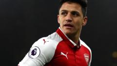
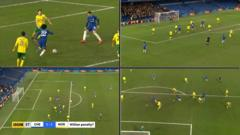
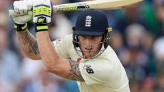

Watch Master Snooker - Allen cruises to 6-1 victory over O'Sullivan
Watch live coverage of the 2018 masters snooker quarter finals as Ronnie O'Sullivan takes on Mark Allen

Konta knocked out by number 123 Pera

Sanchez likely to join Man Utd - Wenger
Sanchez likely to join Man Utd - Wenger

Mercer leads rookies in England squad

Var system is a shambles - Shearer
Var system is a shambles - Shearer
